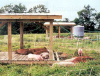

Farmers always have found many uses for the pig-a livestock animal that fits beautifully into the cycles of life on a small-scale farm. One reason behind the enduring popularity of homestead hogs is the animals' willingness to eat practically anything, including kitchen scraps and garden waste. Large-scale commercial hog operations keep pigs confined indoors on a strict grain diet, but the animals are naturally omnivores that love to graze and forage for a broader range of foods.
Pigs also are hardy creatures that require a minimum of attention. When they were introduced to North America by European colonists, they routinely roamed free. Many farmers didn't even fence them in, opting instead to let the pigs roam the forests, feasting on insects, roots, fruits and nuts-even such small animals as mice. As a consequence, their meat took on more succulence and flavor than the supermarket pork most of us eat today.
If you're ready to start raising pigs yourself, one of the simplest ways to get started is to buy a few young pigs in the spring and raise them to market weight. Pigs are herd animals that are more content day-to-day when they have the companionship of their own kind.
"Typically a feeder pig starts at about 50 pounds and should be ready to butcher after four to five months," says Mark Honeyman, an Iowa State University animal science professor who also works with the Leopold Center for Sustainable Agriculture. "By then, they're 5 to 7 months old and weigh about 260 pounds."
GETTING STARTED
To get started, you will need a securely fenced area with a few basics, including a feeding trough (allow at least a foot of space per pig), a water barrel, a small sleeping shelter, and water or mud for the pig to cool off in if shade is not available.
Any three-sided, roofed house will work for permanent shelter; you can buy pig shelters at local farm supply stores or you can build a shelter yourself from sheet metal and wood. Whatever type of shelter you create, it should be well ventilated. Put plenty of straw on the ground for the pigs to use as bedding.
If possible, you'll also want to give pigs access to a pasture, and to keep them from getting loose, you'll need a sturdy fence. If you use electric fence, you will need two strands of charged wire, one 12 to 18 inches high to contain large pigs, and another 4 to 8 inches high to keep smaller animals in the pen. (For more information on fencing options, see "Electric Fencing," August/September 2003.)
The best way to buy a pig is straight from a local farm, where you can ask plenty of questions about the animals before selecting one. Make sure the pig seems active and alert, and has a healthylooking hair coat that is straight and smooth. Never buy a pig that seems small for its age.
To get the pig home, you will need a cage, carrier or crate. A dog carrier may work well for this purpose, but any sturdy contraption about the same size should do the trick.
FOOD AND WATER NEEDS
A pig will consume 1 to 3 gallons of water a day, and several pounds of food. A 50-pound pig consumes less than 3 pounds of food a day, but a 200-pound pig can eat more than 7 pounds. The goal of raising a feeder pig is for it to gain weight, so allow your pig to eat freely, and keep thinking about good potential sources of food.
You could raise a pig entirely on commercial pig food, which is primarily corn and soybean meal, or mix your own organic version of the commercial feed, but you also can use it as a supplement to round out the pig's diet. Grain can be placed in a self-feeder for pigs that have access to pasture or used to balance a diet that includes food scraps.
Joel Salatin of Polyface Farm in Virginia says he keeps a self-feeder containing corn, roasted soybeans, plus small grain with his hogs at all times. "When we let the hogs run in a cornfield, they go weeks without touching anything in the self-feeder," he says. "That means they are fully satisfied with the standing crop."
Melinda Gray of Back Acre Farm at Middlesex, N.C., whose family often raises feeder pigs, took another approach. "My husband used to be a chef, and he would bring home scraps," she says. "That was a wonderful way to do it. We still fed some grain, but we had an abundance of kitchen stuff to feed them."
The type of food you give the pigs will affect the taste of their meat. Consider experimenting-the richer taste that comes from a diverse diet can be one of the greatest benefits of homegrown pork.
"There is a difference," Gray says. "I think with the scraps you get a little more flavor in the meat." She also has noticed a texture difference, finding that when pigs were fed scraps, the meat was less fatty. "But even feeding them grain as opposed to buying our pork at the grocery store, I felt we had a better-quality product."
DELICIOUS, NATURAL MEAT
Raising your own pork may cost you more, or less, than supermarket pork, depending on hog prices, grain prices, the availability of free food scraps and unanticipated veterinarian bills. One way to bring the cost down is to slaughter and butcher the animal and cure the meat yourself.
If you don't plan to do this, make sure a butcher is available locally to do that work before you buy the pig.
The pork will keep in the freezer for up to a year. Honeyman of the Leopold Center says a 260-pound pig yields 80 to 100 pounds of chops, ham, sausage and bacon.
Mother Earth News
|
 D.E. Bixby/ALBC These pigs are raised on red clover with supplemental grain. The electric fence and shade structure, on wooden runners, are moved frequently to new pasture to provide fresh forage and distribute manure evenly. |
|
|